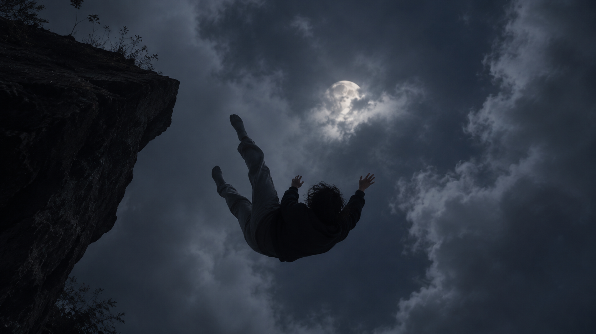
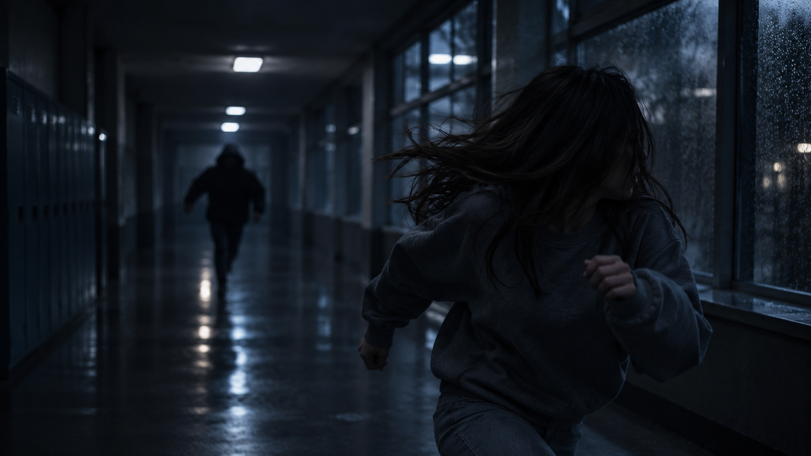
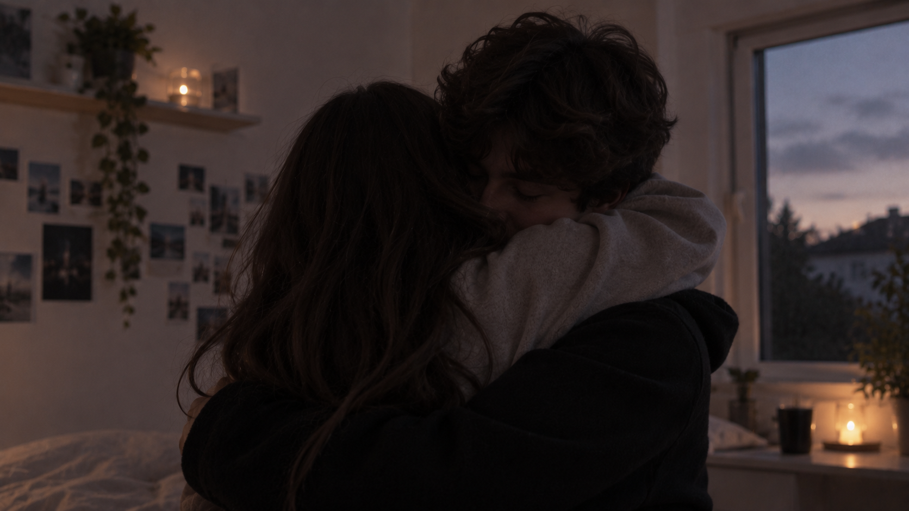

As-tu déjà fait plusieurs fois le même rêve ?
Ou retrouvé une situation familière dans des rêves différents ?
Découvre pourquoi certains rêves reviennent et ce qu'ils peuvent révéler sur nos émotions et nos souvenirs
Les rêves ne sont jamais totalement le fruit du hasard.
Ils peuvent être influencés par nos souvenirs, nos émotions, nos peurs ou encore les événements de notre quotidien.
Certains rêves sont si réalistes ou marquants qu'ils restent dans notre mémoire longtemps après le réveil.
D'autres reviennent plusieurs fois, parfois avec quelques changements...
Mais pourquoi notre cerveau nous fait-il revivre certaines situations ? Et que peuvent révéler ces rêves sur nous ?
| Scène | Rêve | Interprétation |
|---|---|---|
 |
Rêver de tomber | Il peut faire écho à un sentiment d'incertitude ou à une situation dans laquelle on ne se sent pas en sécurité. Cependant, il n'existe pas de signification unique prouvée. |
 |
Rêver d'être poursuivi | Ce scénario peut rappeler une inquiétude, une difficulté ou une situation que l'on préfère éviter. Il est intéressant de réfléchir à l'émotion ressentie pendant le rêve. |
| Rêver de voler | Le vol peut évoquer la liberté, l'envie d'évasion ou le désir de prendre du recul. Cette interprétation dépend de l'expérience de chacun. |
|
 |
Rêver de retrouver une personne | Le rêve peut faire ressurgir des souvenirs, des émotions ou des éléments associés à cette personne. Il ne signifie pas nécessairement que cette personne pense à nous ou qu'un événement particulier va se produire. |
De quoi sont faits nos rêves ? Les rêves peuvent être influencés par différents éléments :
- Les souvenirs : les événements vécus récemment ou des souvenirs plus anciens peuvent réapparaître dans les rêves
- Les émotions : la joie, la peur, la tristesse ou le stress peuvent influencer le contenu de nos rêves
- La vie quotidienne : l'école, le travail, les relations ou les activités habituelles peuvent inspirer certains scénarios
- L'imagination : le cerveau peut combiner des éléments réels et imaginaires pour créer des situations inhabituelles
Cela ne signifie pas que chaque rêve possède une signification cachée.
Le fonctionnement exact des rêves reste encore étudié par les scientifiques.